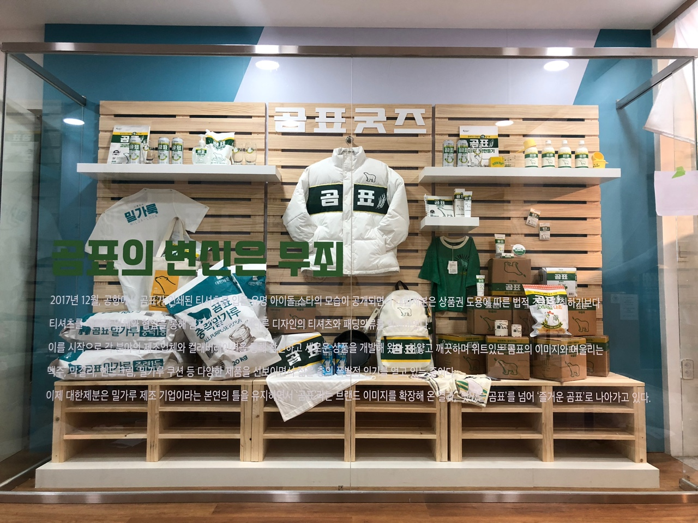
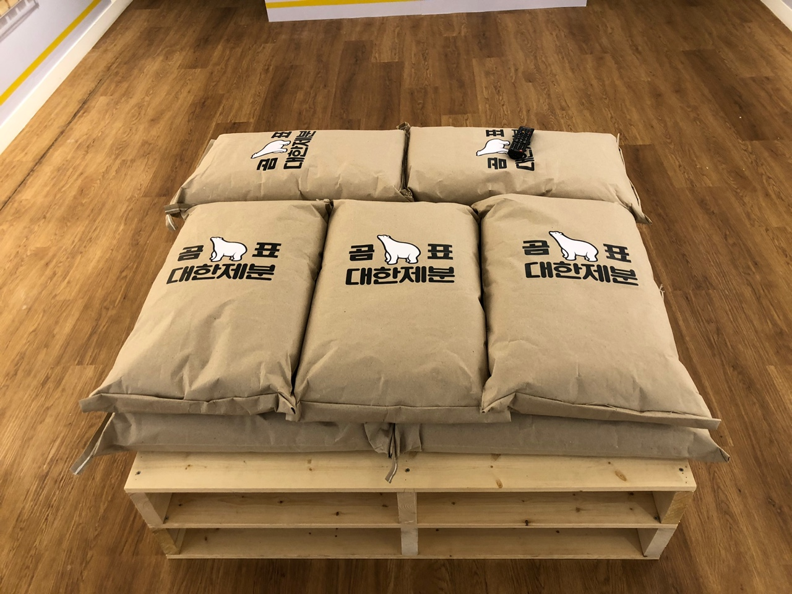
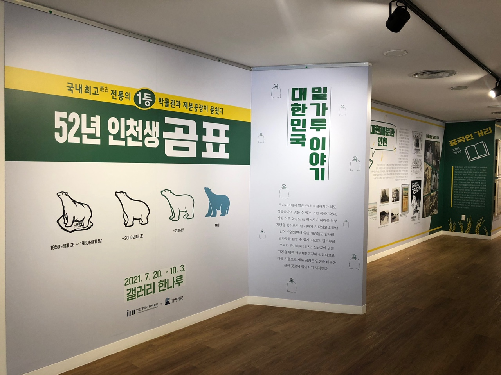
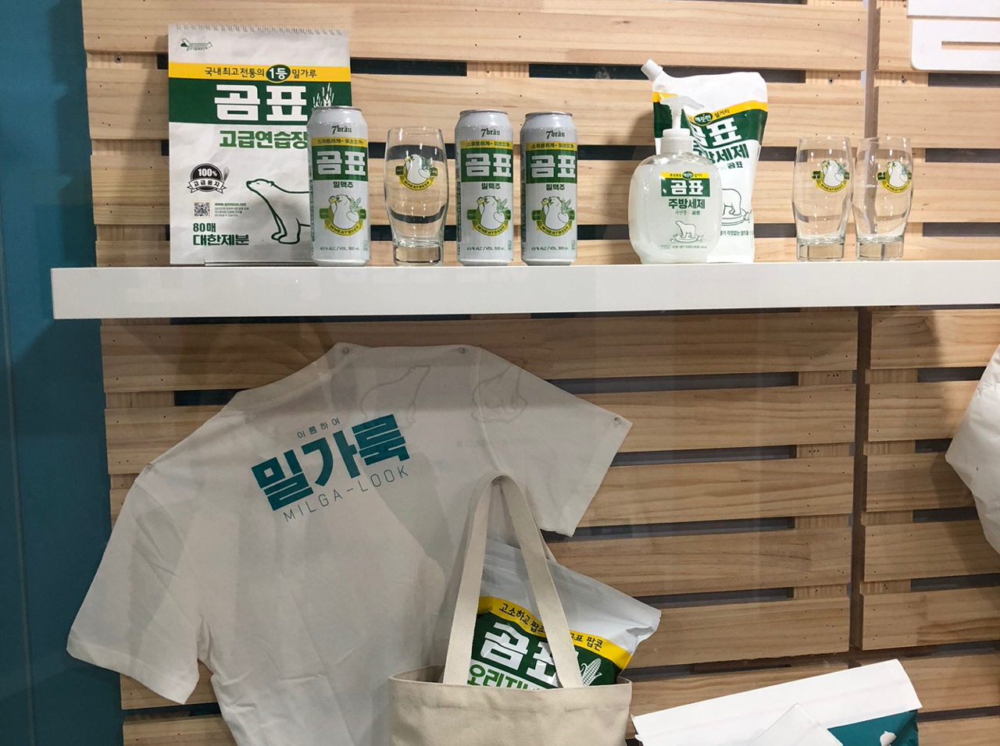

현재
곰표는 1952년부터 70여 년 동안 한국인의 일상에 따뜻한 추억을 남겼습니다. 부모님 세대와의 추억을 나누고 레트로 감성을 통해 연결고리를 마련하고자 합니다. 곰표 밀가루의 시작과 그 발전 과정을 돌아보며, 여러분께 많은 것을 나누고 싶습니다.
- 
- 
- 
- 
곰표는 1952년부터 70여 년 동안 한국인의 일상에 따뜻한 추억을 남겼습니다. 부모님 세대와의 추억을 나누고 레트로 감성을 통해 연결고리를 마련하고자 합니다. 곰표 밀가루의 시작과 그 발전 과정을 돌아보며, 여러분께 많은 것을 나누고 싶습니다.
*Flour Packing Plant 준공
*가정용 프리믹스 제품군 출시
*튀기묭 박력분 제품군 출시
‘곰표’는 1952년 인천에서 시작된 대한제분의 밀가루 브랜드이자 마스코트입니다. ‘밀가루하면 곰표, 곰표하면 밀가루’라는 등식이 성립할 정도로, ‘대한제분’보다 ‘곰표’가 더 친숙합니다. 북극곰의 하얗고 강인한 모습이 밀가루와 잘 어울리고, 귀여운 이미지가 대한제분의 밀가루를 잘 상징하여 마스코트로 채택되었습니다.
미국의 원조로 밀가루 공급이 증가했지만, 한국인의 입맛은 쉽게 바뀌지 않았습니다. 1962년 흉년으로 쌀값이 상승하면서 혼식과 분식 장려운동이 본격화되었습니다. 이 운동은 쌀 대신 밀가루와 보리, 수수 등 다양한 곡물을 혼합해 먹자는 주장을 하였고, 이로 인해 국수, 수제비, 짜장면 등 밀가루 가공 식품이 발달했습니다. 결과적으로, 밀가루는 한국 식생활에서 필수적인 식재료가 되었습니다.
광복 이후 6.25 전쟁은 온 국민을 기아와 빈곤에 시달리게 했습니다. 전쟁이 끝난 1955년, 한국 정부는 미국과 <공법 480호> 협정을 체결하여 밀, 설탕, 면화 등의 원조 물품을 받았습니다. 이로 인해 제당, 제분, 면방직 산업이 발전하였고, 미국에서 원조된 원맥을 가공하기 위해 제분공장이 재건되었습니다. 덕분에 밀가루가 저렴하게 공급되어 사람들은 주린 배를 채울 수 있었습니다.